Atlas of Nowhere
An archive of a fictional plant — the flowers of Neptune. The work presents a narrative in which these flowers were discovered at Mesopotamia Station during two separate periods: the 1860s and 2017. A 150-year gap marked them as extinct, until their accidental rediscovery was found to align with a lost archive documenting the original discovery.
The premise proposes that the plant's growth cycle follows Neptunian seasons, explaining the extended gap between appearances. The exhibition combines paintings, maps, notes, photographs, and sculptures to present this speculative botanical history — exploring what it means for something to exist on the border of plausibility and impossibility.
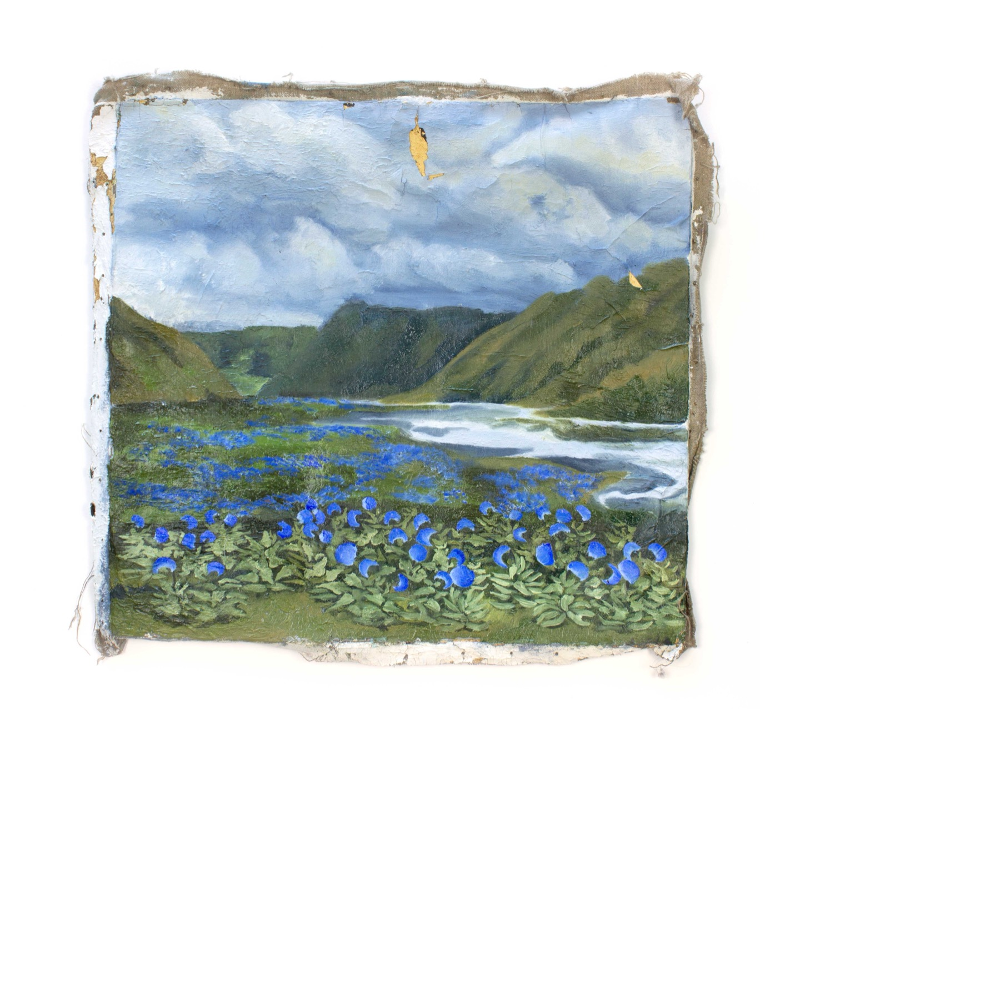
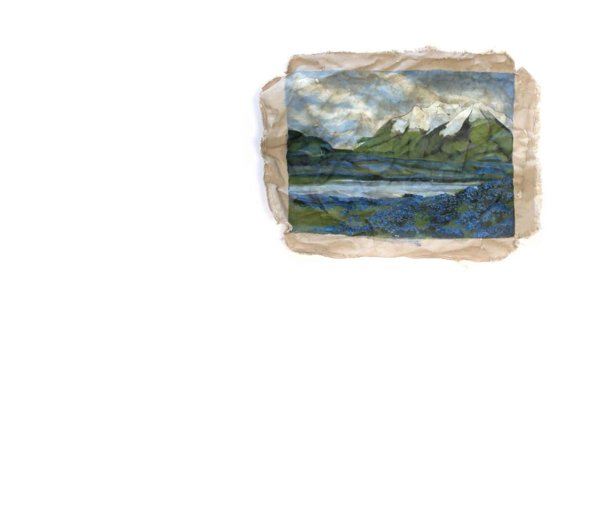
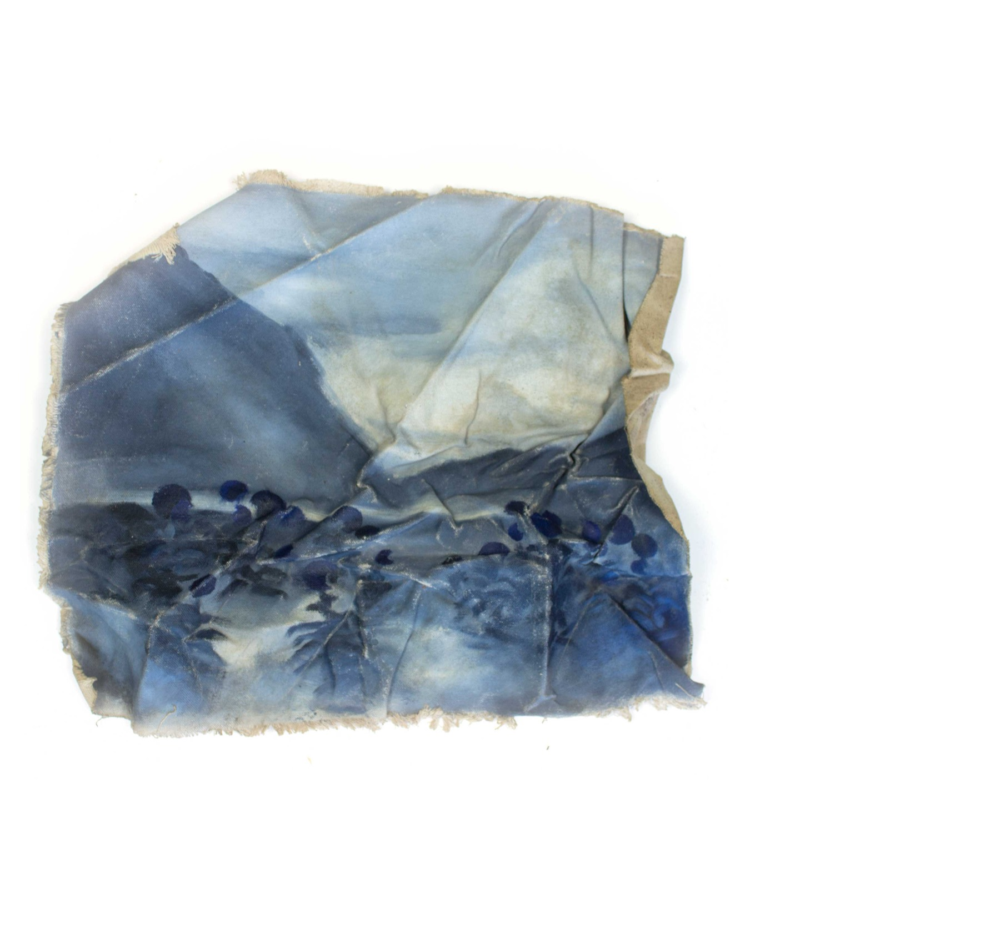
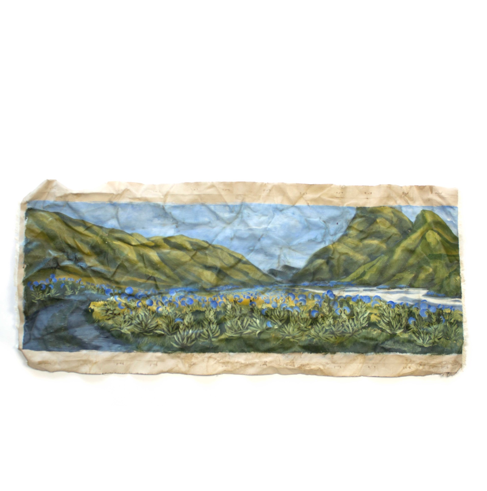
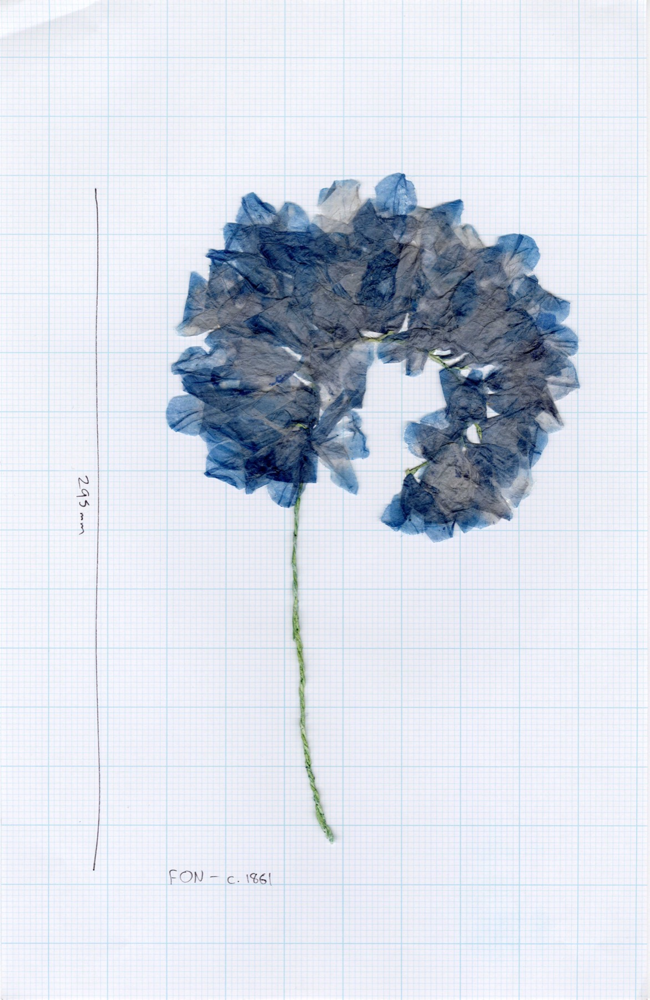
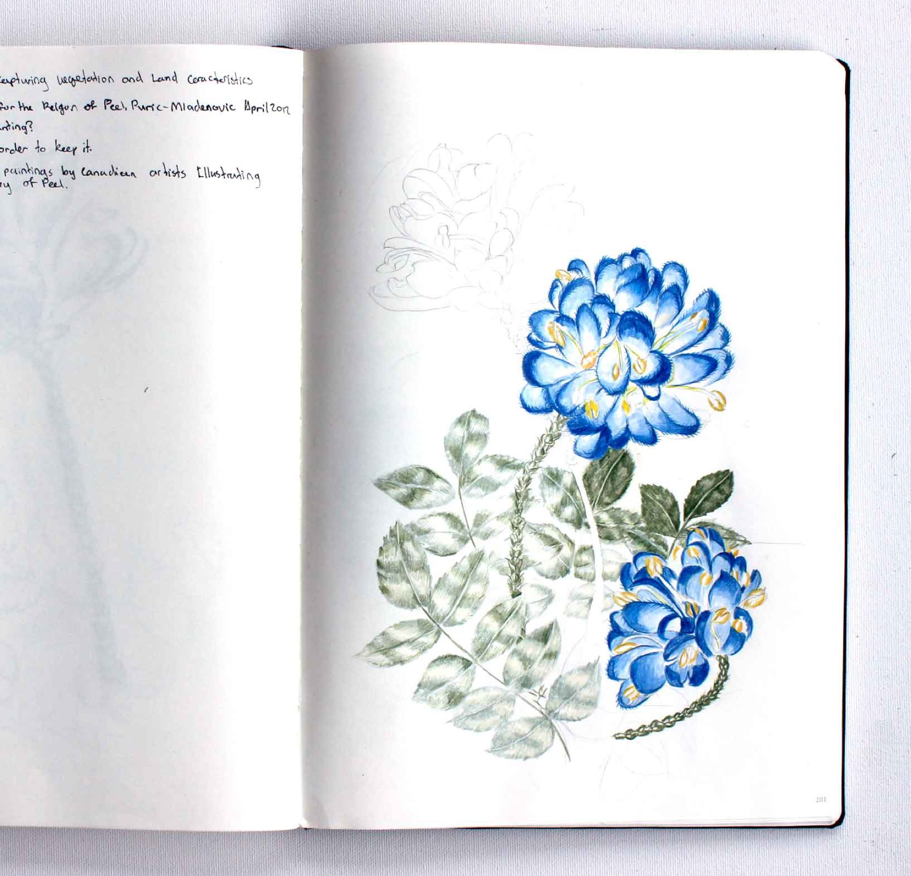
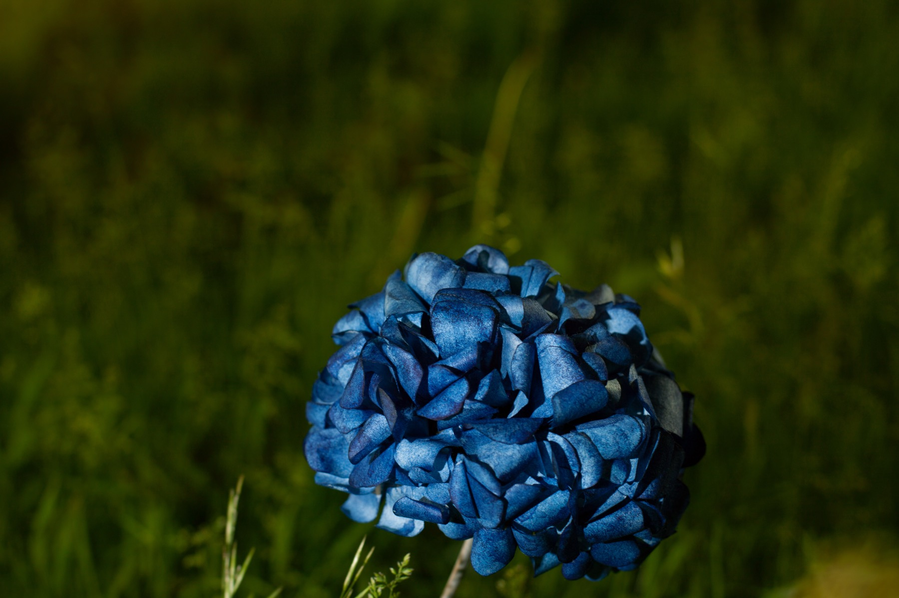
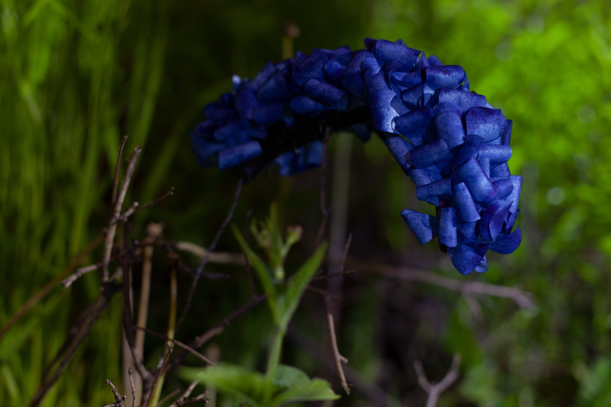
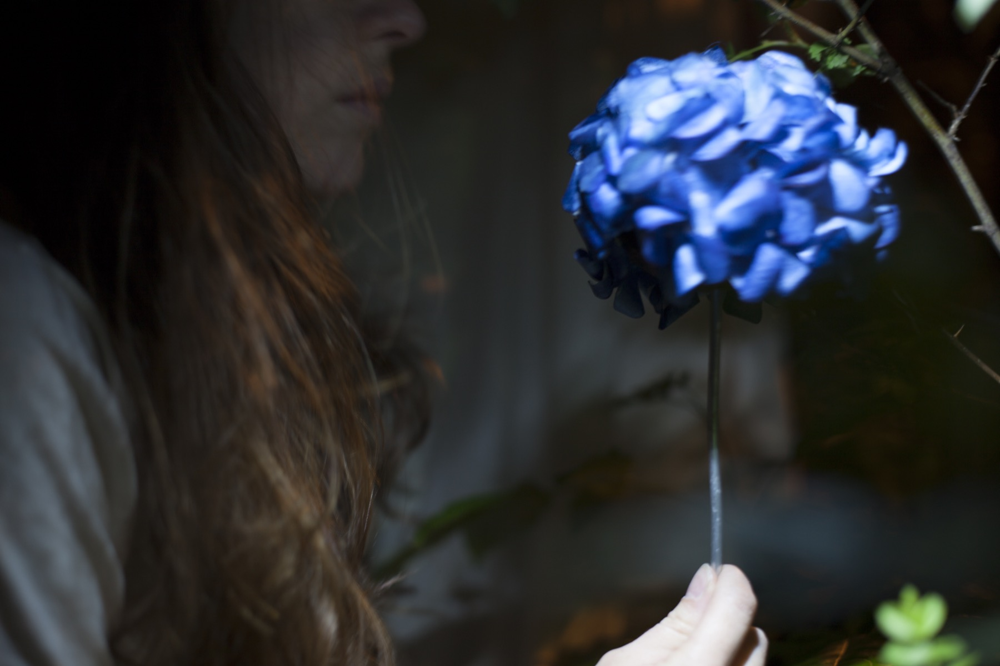
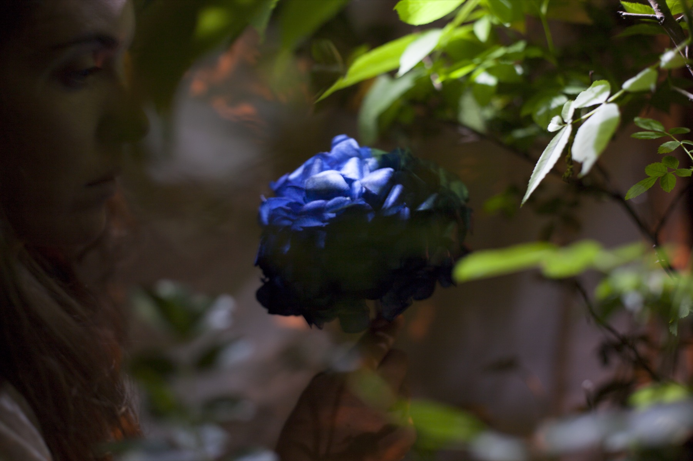
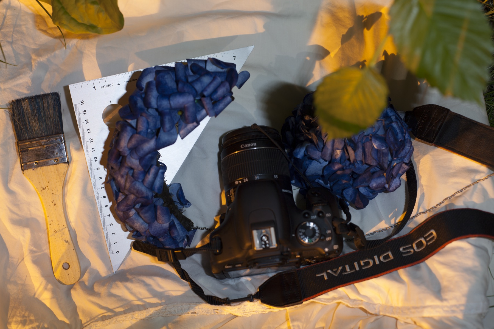